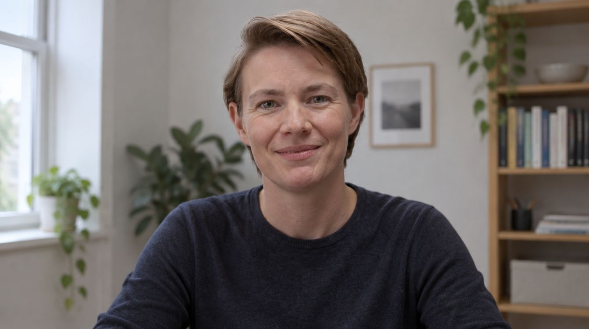

How it works
From first click to a company of your own, in six steps.
Apply with Eva
Pick a venture that speaks to you and talk to Eva, our AI interviewer, for ten minutes. Nothing that fits yet? Make a profile and you get an email when a venture is added.

RecordingWhy do you want to take over this venture?Assessment and feedback
Your conversation is assessed and scored. Everyone gets feedback, even when it is not a fit this time.
An assignment
If you are through, you get an assignment around the venture’s first milestone. You see straight away what the work is, and the makers see how you go about it.
A conversation with the makers
The best assignments get a conversation with the makers themselves. About you, and about the venture that fits you.


 You
YouAn invitation to the show
Whoever convinces the makers gets an invitation to the show. If there are more good candidates than seats, a draw decides who is in this episode. The others go first in the next one.
Invitation
You pitch on the showSeason 1 · recorded in the studioThe choice is made on the show
The founder is chosen on the show. You do not ask for money: the investors compete for you. At the end you hear it: you are The Next Founder.
 LIVE
LIVEMilestones, money and stake
After the choice you settle the milestones with the makers. The first tranche is ready, and every milestone you hit unlocks more funding or a bigger stake. Viewers follow your progress.
The deal in short
Known upfront for every venture. Amounts and the exact split differ per venture.
You
Makers
Partners
Tranche 1
Tranche 2
Tranche 3
 +
+Ready to look?
Seventeen ventures are looking for a founder.